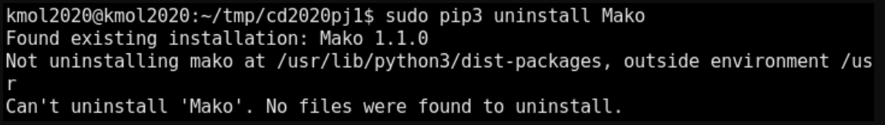
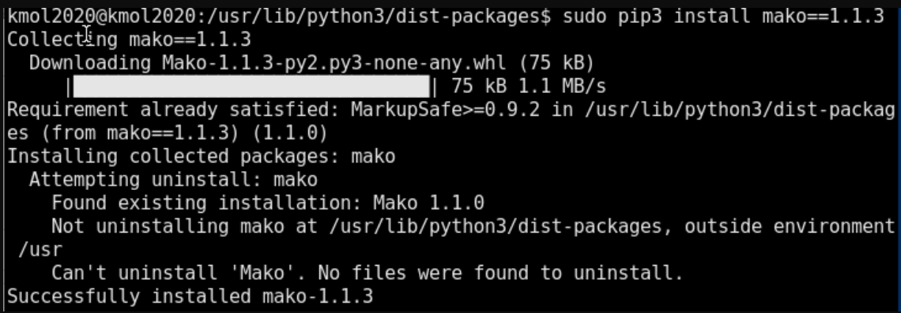

Note <<
Previous Next >> Linux指令
Q&A
PY3.8.2更新後出現之LEO無法開啟問題與解決方法。
拿之前home_mdecourse/.leo裡面的.leoID.txt放到home裡面就正常了。
將手機用做攝像頭
ivcam:https://www.e2esoft.com/ivcam/

obs:https://obsproject.com/
藉由obs之串流功能或者錄影功能即可使用錄影的方式進行線上教學及操作，若需要錄製操作者的臉或者是展示現場操作之步驟及方式亦可以使用ivcam對手機進行連結，並截油ivcam之功能達到與攝像頭相對應的功能。
ivcam設定方式:
1.安裝並且執行ivcam(手機電腦都需要安裝)

2.連接後到obs去設定攝像頭

3.結束後即可開始使用手機攝像頭
ssh 設定問題

1.下載此putty登陸檔:https://s40723221.github.io/cd2020/downloads/putty_home.reg
2.下載後點兩下該登陸檔
3.開啟putty並且load github.com
4.設定proxy和鑰匙後重新push因該會成功
問題圖片
解決方式
在tmp/cd2020pj1之路徑下pip3 install pydrive安裝此模組
問題圖片
在virtualbox無法匯入ova檔案
解決方式
(學校)在路徑C:\Users\cadlab\VirtualBox VMs下找到為刪除的之ubnutu將其清除再次匯入即可解決。
(家裡)先以圖片中的copy方式複製問題並且貼上後可以找到一組路徑，該組路徑會是在電腦中virtualbox的檔案儲存路徑，並且將舊有的部分刪除。

問題圖片
缺少且無法移除mako此模組

解決方式
至路徑/usr/lob/python3/dist-packages sudo pip3 install mako==1.1.3安裝特定版本1.1.3

Note <<
Previous Next >> Linux指令